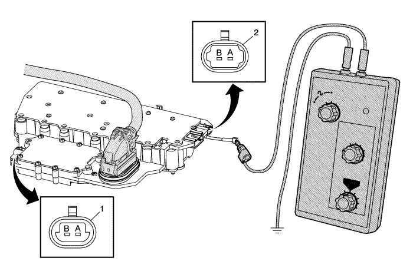

Prueba de entrada de velocidad del eje de salida/velocidad del eje de entrada del conjunto de módulo de control del cambio y válvulas solenoides de control.
Herramientas especiales
EL-38522 Generador de señal variable
Si desea informarse sobre herramientas regionales equivalentes, consultar Herramientas especiales .

El objetivo de esta prueba es proporcionar una señal simulada del sensor de revoluciones de entrada/salida (ISS/OSS) para los circuitos de entrada de ISS/OSS del conjunto de válvulas solenoides de control (con carrocería y TCM).
- Desconecte el conector del mazo de cables de ISS/OSS del conjunto de válvulas solenoides de control (con carrocería y TCM).
- Mediante un juego de comprobación de terminal, conecte el generador EL-38522 al circuito de señales OSS o ISS afectado en el conjunto de válvulas solenoides de control (con carrocería y TCM).
| 2.1. | Establezca la señal del generador EL-38522 en 8 voltios, la frecuencia en 120 y el porcentaje del ciclo de servicio en 50. |
| 2.2. | Con el encendido conectado, observe el parámetro Señal ISS o Señal OSS de la herramienta de diagnóstico. |
| 2.3. | El parámetro de señal debería mostrar entre 100-400 r.p.m. |
| ⇒ | Si la señal no se muestra en este rango, el conjunto de válvulas solenoides de control (con carrocería y TCM) no está leyendo la señal de entrada correctamente y está defectuoso. |
| © Copyright Chevrolet. Reservados todos los derechos |